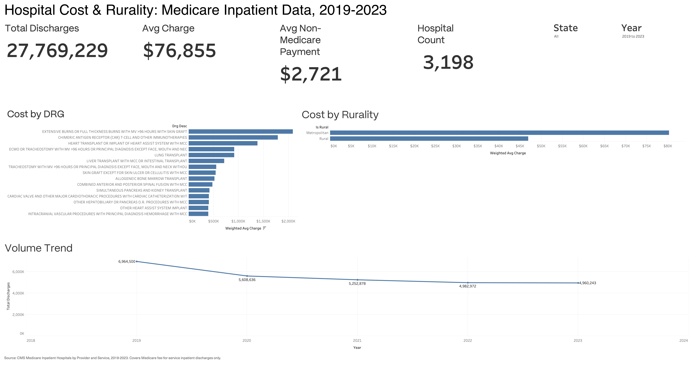

Medicare Inpatient Cost by Diagnosis and Geography
Built on official CMS Medicare inpatient data (2019-2023, ~790K rows, all federal, not Kaggle). Not published to a live Tableau Public link, a reproducible app bug (an unrelated "not an extract yet" dialog that couldn't be dismissed) blocked publishing, so the screenshot below is a static export of the finished, fully interactive local workbook.
Full write-up and workbook on GitHub →
Built to surface where Medicare inpatient cost actually concentrates, by diagnosis and by rural versus metro geography, and whether discharge volume has recovered since 2019. The business metrics in view were volume-weighted cost per case and discharge volume over time, aimed at flagging cost-containment and capacity-planning problem areas rather than reacting to raw sticker price.
Recommendations
Use volume-weighted cost, not raw per-case sticker price, to prioritize where cost-containment or care-pathway review actually pays off.
Control for case-mix and facility scale before treating the rural/metro cost gap as purely geographic, the right response differs depending on the real driver.
Plan capacity against 2019 volume, not current volume, current numbers may still understate real demand rather than reflect a permanent shift.

Key Findings
Cost varies enormously by diagnosis, and volume-weighting matters
Weighted average charge ranges from roughly $13K to over $2M by diagnosis. Extensive burns treatment topped the ranking ahead of CAR-T immunotherapy, not because it costs more per case, but because it happens at meaningfully higher volume.
A real, reliable rural/metro cost gap
Metropolitan hospitals average roughly $80K per admission versus $47K at rural hospitals. A simplified metro/rural split was used instead of the full 15-category RUCA breakdown, after several of those categories turned out to be backed by fewer than 10 hospitals, one by just 1.
Inpatient volume still hasn't recovered from COVID
National Medicare inpatient discharges dropped from 6.96M in 2019 to 5.61M in 2020, and were still at 4.96M by 2023, below the pandemic low three years later.